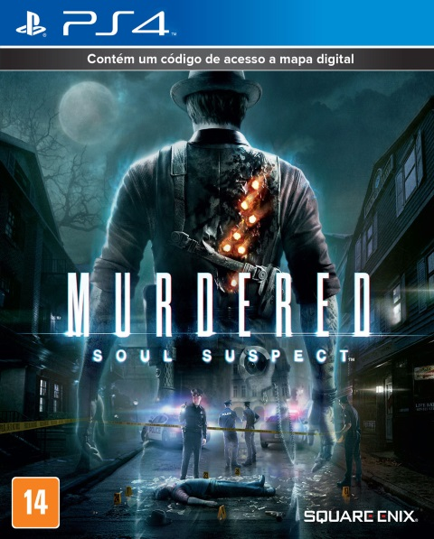

|  |
Murdered: Soul SuspectMurdered: Soul Suspect é um videojogo de ação-aventura, desenvolvido pela Airtight Games e publicado pela Square Enix. Foi lançado para Microsoft Windows, PlayStation 3, PlayStation 4, Xbox 360 e Xbox One.
R$ 110,20
|